Our data exploration process involves acquiring, cleaning, preprocessing, and visualizing data to prepare it for modeling and analysis. Please click on each button to explore further.
The data used in this project was collected from multiple publicly available Reddit-based mental health datasets hosted on the Hugging Face dataset repository, along with a live Reddit dataset collected through an API.
The following datasets were used in this study:
Dreaddit Dataset
Records: ~3,500 posts
Features: text, subreddit, label
Purpose: labeled dataset for stress classification research.
Reddit Mental Health Posts Dataset
Records: ~150,000 posts
Features: post text and subreddit metadata
Purpose: large collection of mental health related Reddit discussions.
SWMH Dataset
Records: ~50,000 posts
Features: textual posts and mental health related labels
Purpose: social media mental health analysis dataset.
Reddit Depression Cleaned Dataset
Records: ~7,000 posts
Features: cleaned Reddit posts focused on depression discussions
Purpose: depression related language patterns.
Live Reddit Dataset
Records: ~102,000 posts
Features: id, title, text, subreddit, author, score, number of comments, timestamp
Purpose: unlabeled dataset collected from Reddit communities for testing and validating the preprocessing and modeling pipeline.
The flow below outlines each major step performed during the data preparation stage.
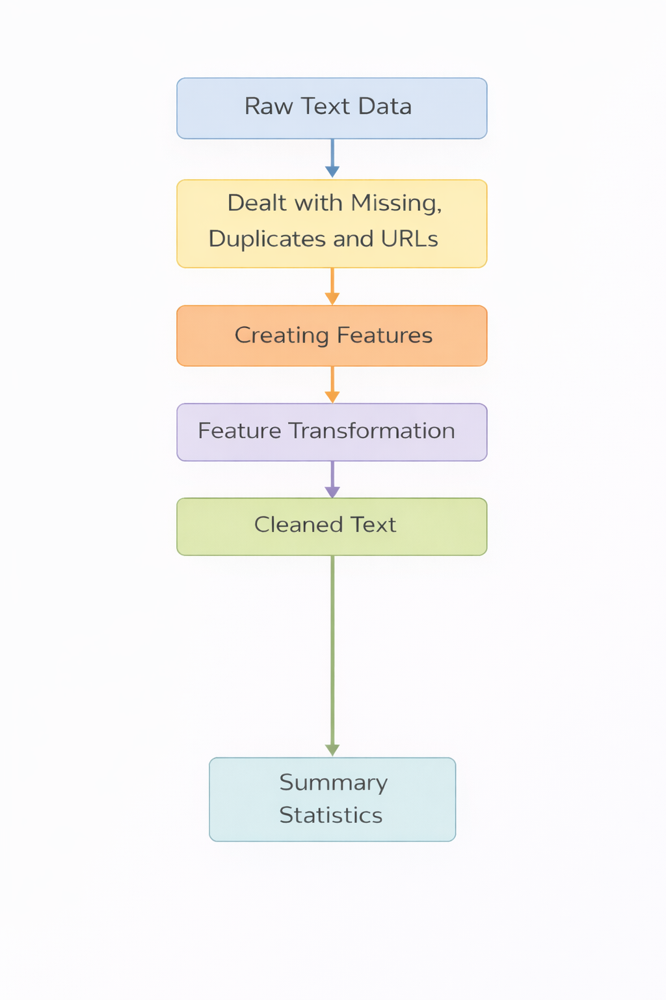
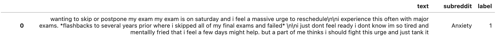
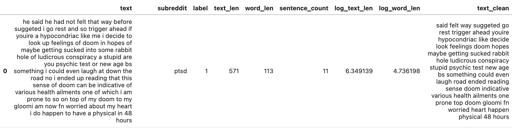
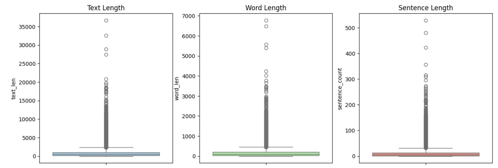
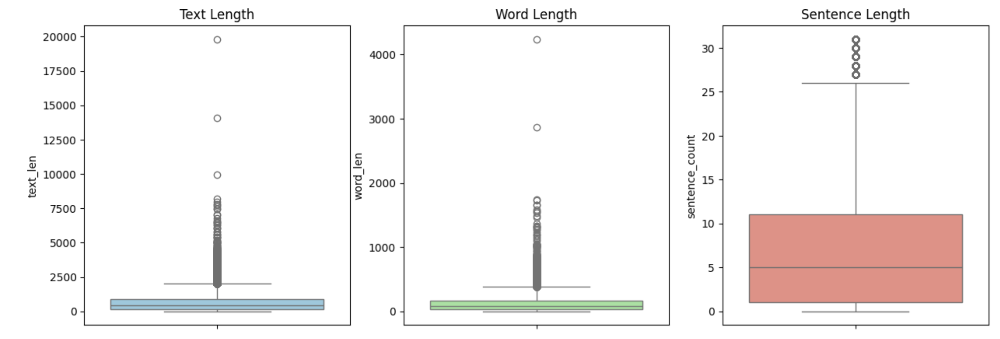
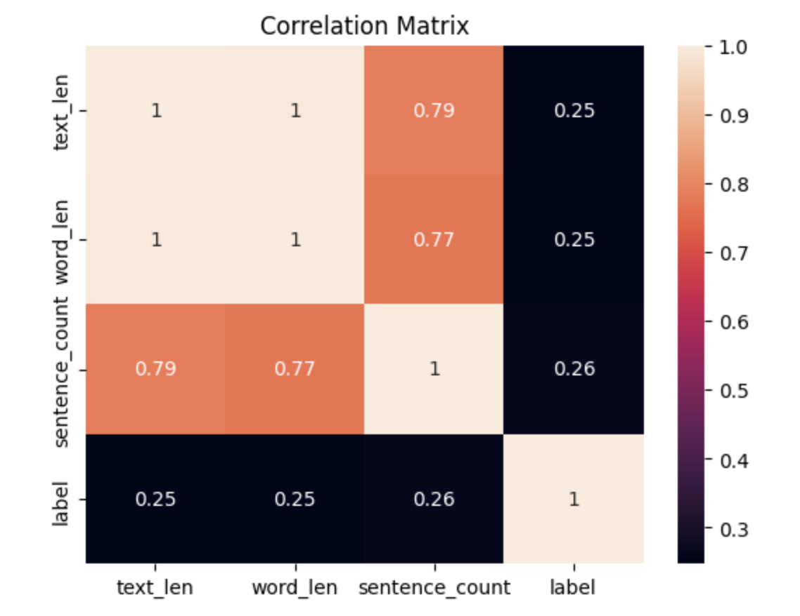
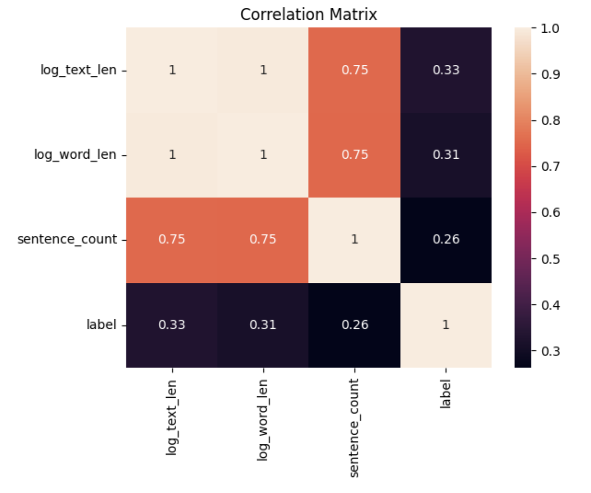
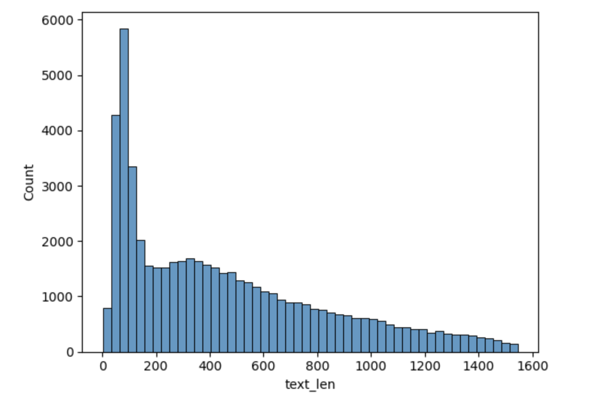
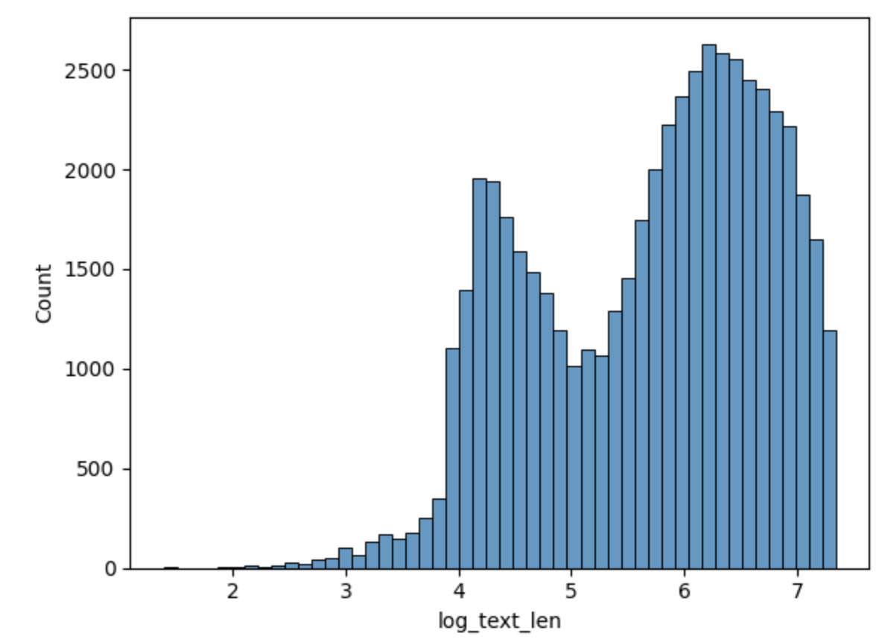
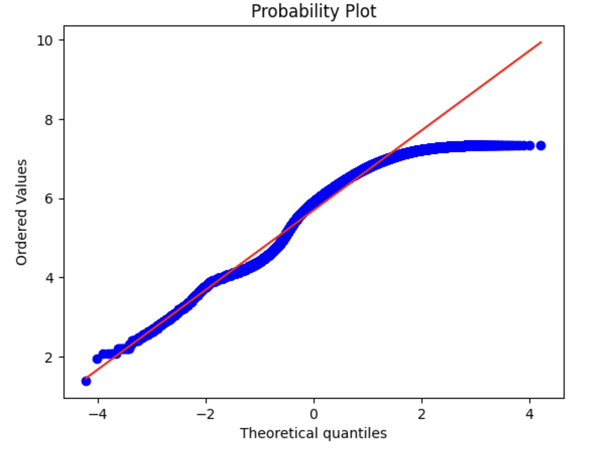
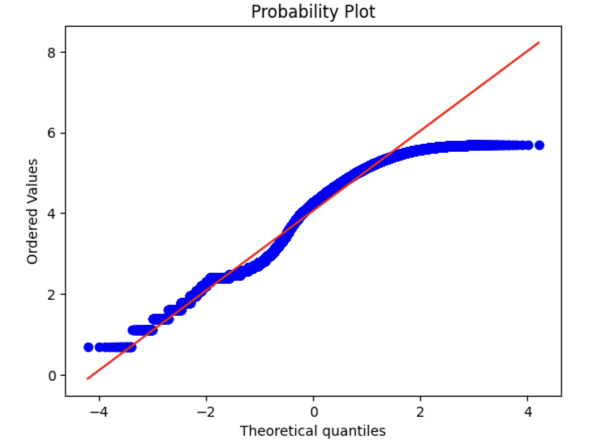
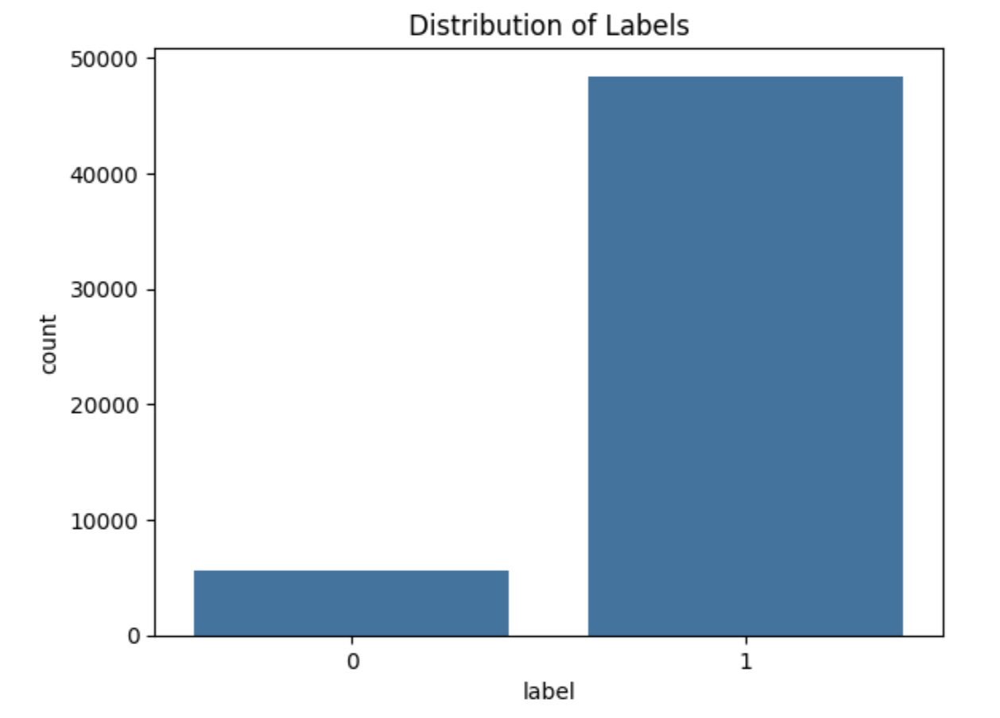
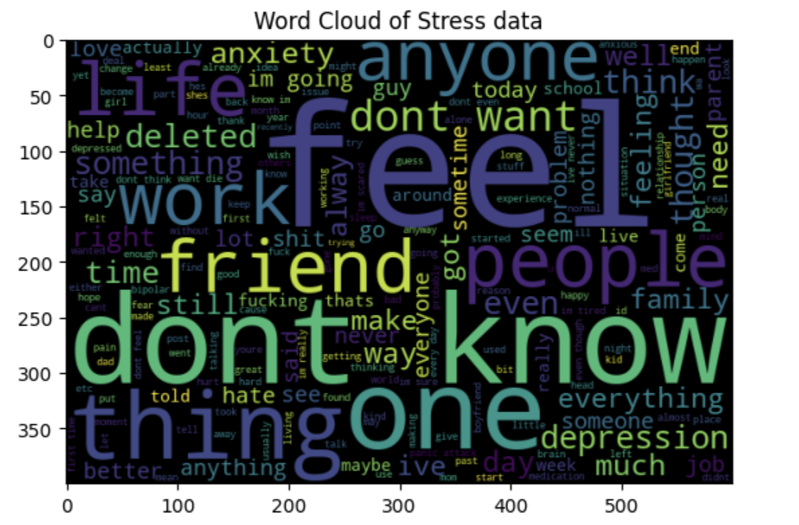
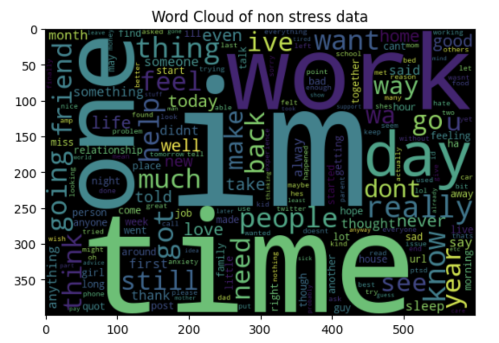